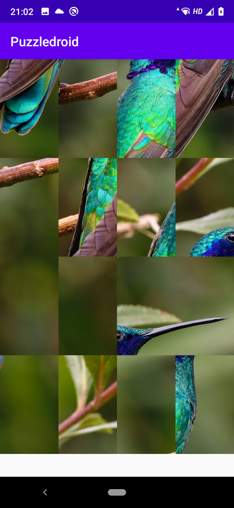

Clica en el boton que representa al modo monojugador.
Te aparece una lista de puzzles y los niveles a los que puedes jugar. Selecciona el nivel y luego selecciona el puzzle
Se carga la imagen de la cual queremos hacer el puzzle. Da al boton del play para mostrar el puzzle
Cuando hayas resuelto el puzzle te saldrá un mensaje para que cliques en el boton de back del móvil para volver a la lista de puzzles y continuar jugando. Si deseas abandonar el juego solo tienes que dar al boton back desde la pantalla de lista de puzzles y volver a la pantalla de inicio, desde donde se cierra la aplicación clicando el boton de salida
Con el nivel 1 el puzzle tiene 9 piezas, con el nivel 2 tiene 12 y con el 3 tiene 16. A medida que el nivel aumenta la puntuación será mayor a igual tiempo de resolución

Clica el boton que representa el modo multijugador
Te aparece la ventana de login desde donde te identificas para poder iniciar el juego en este modo.
Si no estas registrado tendrás que clicar en el boton de registro y dar un nickname y una password.
A partir de ahi la forma de jugar es similar a la del modo monojugador pero en este caso se quedan registrados los datos de la jugada. Para ver los diez primeros records clicamos en el boton de listado que aparece en la pantalla de inicio. Nos dará un listado ordenado de los records